Guidelines for Deprecating or (End Of Life) EOL’ing Layers and Components, or Releasing “Unsupported” Content, or Moving Functionality Between Layers¶
Guidelines for Layers¶
The SYNOPSIS and HELP text must be updated to clearly indicate when a layer is deprecated or EOL’ed, or when any functionality is “moved” to another layer.
The following example shows the updated SYNOPSIS and HELP text for the IPNET_CRYPTO layer when ALL the functionality from that layer is moved to the OPENSSL layer; the IPNET_CRYPTO layer effectively becomes EOL’ed
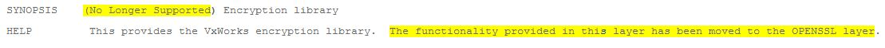
The following example shows the updated SYNOPSIS and HLEP text when a layer is deprecated. Note that deprecating is not equivalent to EOL’ing. A layer is first deprecated, and after a certain amount of time, the layer is then EOL’ed:
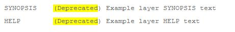
The following example shows the updated SYNOPSIS and HELP text when a layer is “End of Life’d” (EOL):
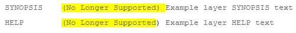
The following example shows the SYNOPSIS and HELP text for layers (BSP, PSL, or device driver) that are shipped as part of a unsupported BSP. The unsupported BSP concept was introduced in SR0610:
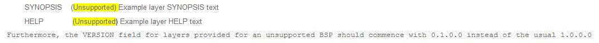
The SYNOPSIS and HELP fields of ALL previous versions must be updated as outlined in Guideline#1 by using a RETROFIT statement. This guideline is not necessary for the (“Unsupported”) prefix since unsupported BSPs should have this prefix applied from the first version of the layers.
When transitioning a layer to deprecated, increment the 3’rd digit of the version. When transitioning a layer from deprecated to EOL’ed, the 3’rd digit of the version should be incremented again.
When transitioning a layer to EOL’ed, use a “VSB_REQUIRES LAYER_NOT_SUPPORTED” statement to only disable the latest version of the layer.
The following is an example layer definition BEFORE the layer has been deprecated:
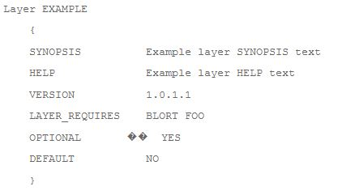
The following is an example layer definition AFTER the layer has been deprecated:
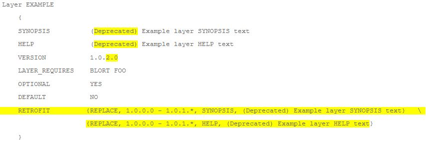
The following is the example layer definition AFTER the layer has been EOL’ed:
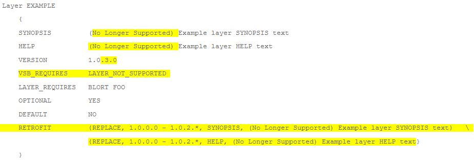
NOTE: a LAYER_REQUIRES statement should be used instead of VSB_REQUIRES for bsp.vsbl files.
When deprecating or EOL’ing a layer, do NOT use a RETROFIT statement to “disable” older versions of the layer.
The following illustrates how NOT to update the example layer definition AFTER the layer has been EOL’ed, i.e. do NOT add the following RETROFIT statement:
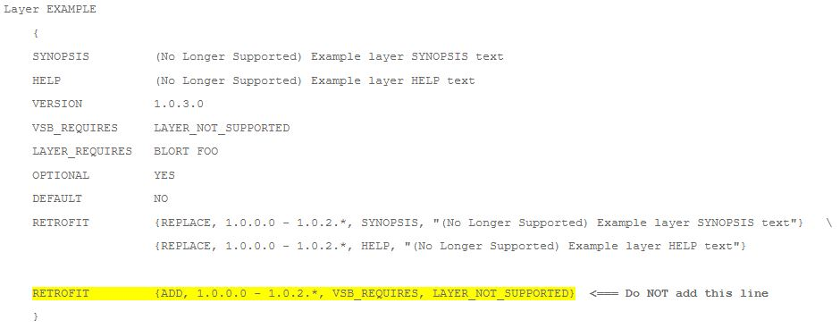
The above RETROFIT statement will make all previous versions of the layer dependent on the non-existent LAYER_NOT_SUPPORTED layer; thus effectively “disabling” all of the previous versions of the layer. This is especially disruptive to customers with existing VSB projects where an old version of the layer was enabled in that project.
When all of the layers shipped in an RPM have become EOL’ed, the YUM repository should be updated to mark the RPM as “optional”. A new Wind River Installer feature (Rally US52509) will use the “type” flag from the YUM group definition. RPMs marked with type=”optional” will not be automatically downloaded/installed at a customers site. This will prevent “new” and existing customers from automatically having the EOL’ed content installed. The “optional” type designation applies to all versions of the RPM. Customers can explicitly download and install the EOL’ed content, but using the content will be “at their own risk” (since it’s not supported anymore). The process for marking an RPM with type=”optional” is T.B.D. (current process is to send an e-mail to the relevant Tools team member).
In certain situations, it is necessary to prevent older versions of a layer from being enabled when newer versions of some other layer are enabled. A RETROFIT statement is used to enforce a mutual exclusion relationship between the layers.
The following is an example of the IPNET_CRYPTO layer before the cryptographic functionality was moved to the OPENSSL layer:
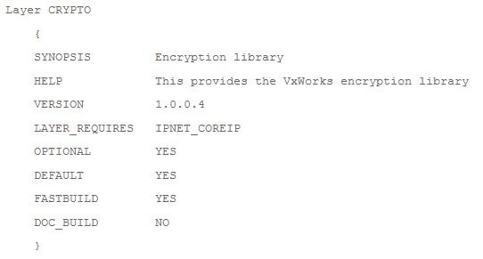
The following is an example update to the IPNET_CRYPTO layer meta-data to EOL the layer, and also make older versions of the layer mutually exclusive with new versions of the OPENSSL layer. The newer versions of the OPENSSL layer provide the “CRYPTO” feature:
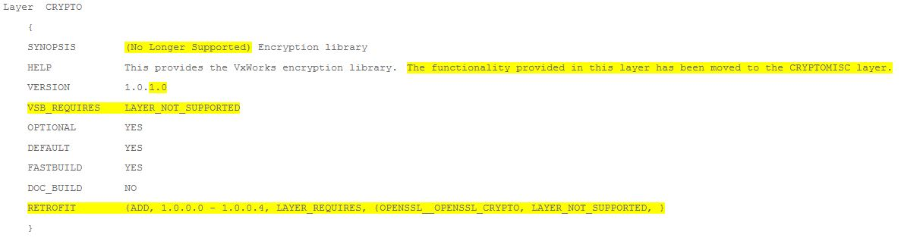
The RETROFIT statement will cause all previous versions of the CRYPTO layer to be unusable (due to a “LAYER_REQUIRES LAYER_NOT_SUPPORTED”) if the new OPENSSL layer has been enabled. Note: the “OPENSSL__OPENSSL_CRYPTO” is a “flag” used in the LAYER_REQUIRES conditional logic statement. It’s comprised of the layer name (OPENSSL) + a double underscore + feature name (OPENSSL_CRYPTO).
Guidelines for Components¶
The SYNOPSIS and NAME text must be updated to clearly indicate when a component (CDF) is deprecated. The following is an example of the INCLUDE_L3_CACHE_QOS component which has been deprecated in favour of the INCLUDE_CACHE_QOS component:
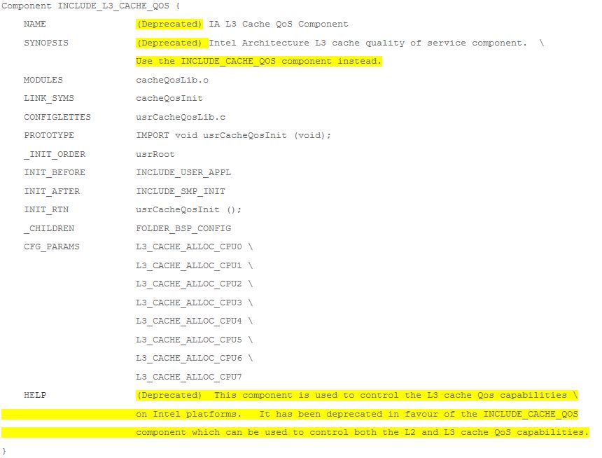
The above example has updated (actually added) the HELP field. The text provided in this field is not presented anywhere within Workbench.
When EOL’ing a component, simply remove the definition from the .cdf file.
Overall Note: In some situations, legal agreements/restrictions may require that layers/components be removed from the product “immediately” without following the formal deprecation and EOL’ process described in this guideline. Check with the Product Manager responsible for the technology in question if a layer needs to be removed from the product “immediately” (due to some legal requirement).
Change Log¶
Date |
Change Request ID |
Version |
Change By |
Description |
06/17/2020 |
N/A |
0.1 |
Shree Vidya Jayaraman |
Transferred content from Policy for Deprcating… Jive page |